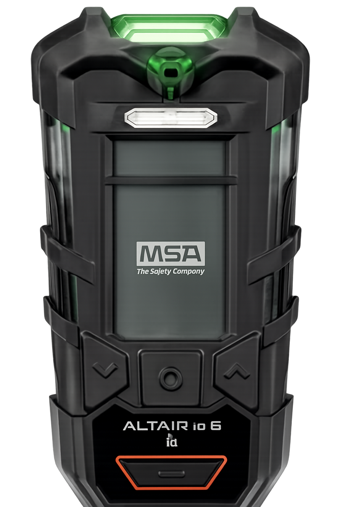

Reliable protection against hazardous gases in hard rock mining
Хүдрийн далд уурхайд хорт хийнээс найдвартай хамгаалах шийдэл

Underground mining environments can expose workers to dangerous gases such as carbon monoxide, methane, and hydrogen sulfide.
This detector provides real-time monitoring, alarms, and data logging to ensure miners’ safety and compliance with international standards.
Далд уурхайн орчинд ажилчид нүүрстөрөгчийн дутуу исэл, метан, устөрөгчийн сульфид зэрэг аюултай хийнд өртөх эрсдэлтэй.
Зөөврийн бөгөөд бага овортой, биед (касканд хавчих, эсвэл энгэрт, аюулгүйн бүсэнд зүүж) тогтоох зориулалт бүхий илрүүлэгч нь бодит цагийн хяналт, дохиолол, мэдээлэл хадгалалтаар уурхайчдын аюулгүй байдлыг хангаж, олон улсын стандартыг мөрдүүлдэг.
Detects CO, CH₄, H₂S, and O₂ levels simultaneously.
CO, CH₄, H₂S, O₂ зэрэг хийн түвшинг нэгэн зэрэг илрүүлнэ.
Shockproof, dustproof, and waterproof (IP67) for underground conditions.
Цохилт, тоос, усны хамгаалалттай (IP67) далд уурхайн нөхцөлд тохиромжтой.
Audible, visual, and vibration alarms for immediate response.
Дуу, гэрэл, доргиогоор мэдээлэл өгч шуурхай хариу арга хэмжээ авах боломж бүрдүүлдэг.
Up to 16 hours continuous operation with rechargeable lithium battery.
Цэнэглэдэг литийн батерейгаар 16 цаг хүртэл тасралтгүй ажиллана.
1. Which gases can this detector identify?
Only oxygen
CO, CH₄, H₂S, O₂
Nitrogen only
2. What type of alarms does the detector use?
Audible, visual, vibration
Only flashing lights
None
3. How long can the battery last?
2 hours
16 hours
Unlimited